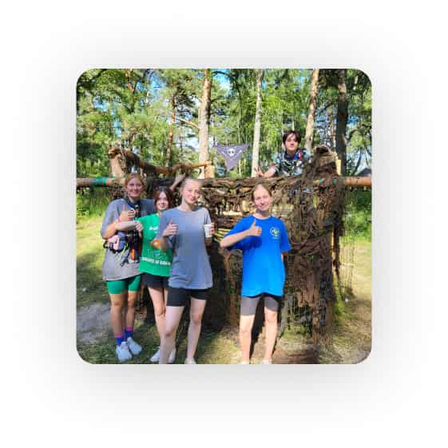
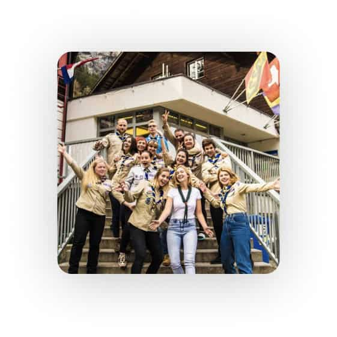

Відкрий світ українського Скаутингу!
Приєднатись до нас
Про нас
Наша Місія – це сприяння вихованню молоді України за системою цінностей, заснованій на Скаутській Обіцянці та Скаутському Законі. Через Скаутинг ми будуємо кращий світ, де люди самореалізуються як особистості та відіграють конструктивну роль у суспільстві.
-
Наша Історія
Національну Організацію Скаутів України (НОСУ) засновано у 2007 році. У 2008 році на 38-й Всесвітній Скаутській Конференції у Кореї НОСУ стала повноправним членом Всесвітньої Організації Скаутського Руху (далі – ВОСР). Наразі ми нараховуємо вже 2000+ учасників, маємо 173 країни-партнери та провели 1328 освітніх заходів.
-
Місія
Наша Місія – це сприяння вихованню молоді України за системою цінностей, заснованій на Скаутській Обіцянці та Скаутському Законі. Через Скаутинг ми будуємо кращий світ, де люди самореалізуються як особистості та відіграють конструктивну роль у суспільстві.
-
Програма
Скаутська Молодіжна Програма є основою Скаутингу. Це відповідно організований, практичний навчальний процес для дітей та підлітків, спрямований на гармонійний та всебічний розвиток особистости задля досягнення свого найвищого потенціалу
-
Скаутський Метод
Скаутський Метод є унікальною системою прогресивного самовиховання. Він застосовує різні елементи, які підтримують мету та Принципи
Скаути україни

1326
Освітніх заходів
173
Країни - партнери
35
Об‘єднань в Україні
Наші заходи
-
Табори
Збори-походи надають дітям можливість розвивати свої інтереси та хобі, а також застосовувати на практиці знання та навички, отримані в Скаутингу протягом року.
-
Міжнародні заходи
Участь у міжнародних поїздках та подорожах створює умови для пізнання Скаутами навколишнього світу, включаючи все різноманіття культур, мов та країн. Міжнародні заходи пропонують багато різноманітних активностей для дітей, молодих людей та дорослих лідерів НОСУ.
-
Тренінги

Орієнтовані на Скаутів та Скаутських лідерів на різних етапах їхньої Скаутської подорожі та розроблені таким чином, щоб задовольнити потреби й інтереси членів різного віку
-
Онлайн івенти

Світ не стоїть на місці, і умови, в яких ми живемо, постійно змінюються, НОСУ є гнучкою у використанні різноманітних форм в роботі зі Скаутами. Це дає можливість не тільки брати участь у інтерактивних воркшопах та тренінгах, але й у міжнародних заходах, залишаючись в Україні.
Запрошуємо стати Скаутом або Скаут-Лідером!
Членом Національної Організації Скаутів України може стати кожний, незалежно від віку, походження, раси, гендеру чи віросповідання!